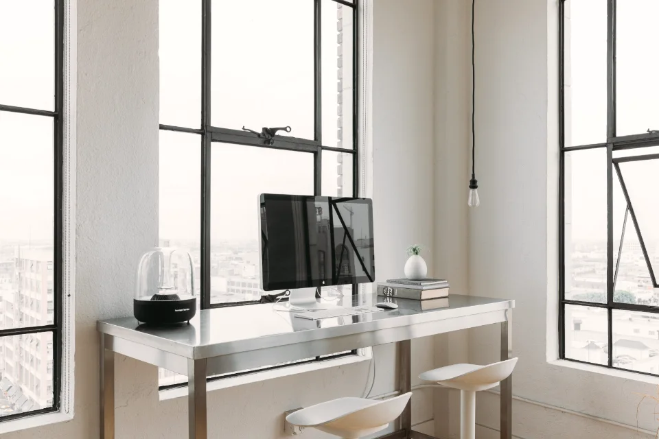
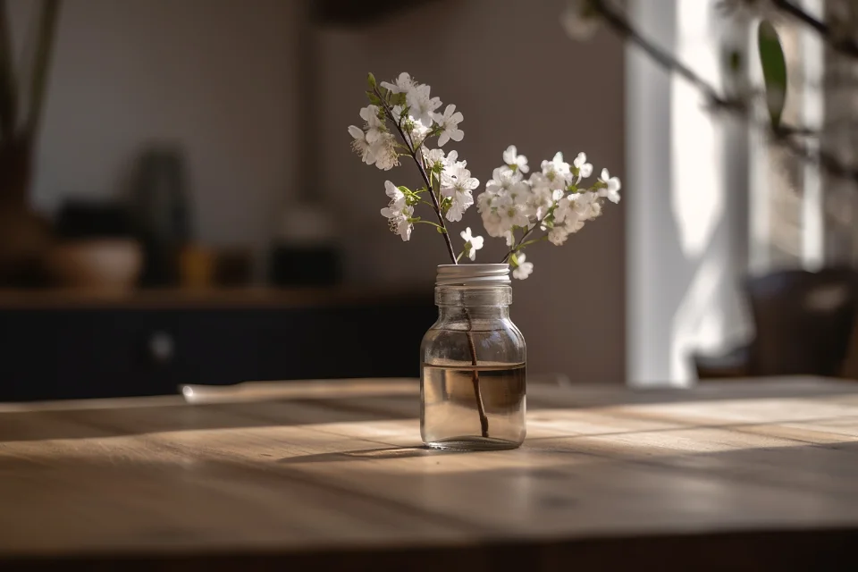
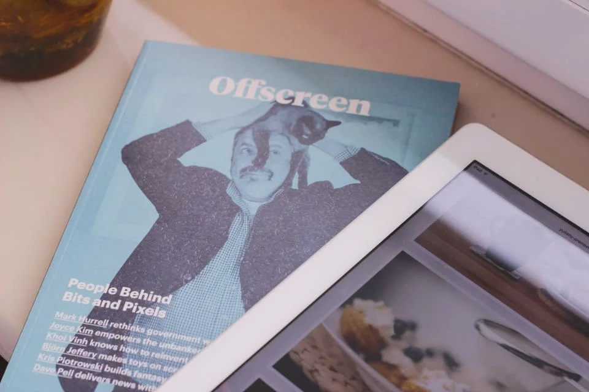

01
Brand Website
ブランドサイト制作
ブランドの歴史、哲学、手仕事。語るべき物語を章立てし、ページをめくるように読み進めたくなるサイトに仕立てます。
詳しく見るGRAND VERT Inc. — Tokyo, Jingumae
一画素にまで、品格を。

№ 01 About us
グラン・ヴェールは、上質な商品やサービスを持つブランドのためのWeb制作会社です。老舗の和菓子店から、海外展開をめざすジュエリーブランド、建築設計事務所まで。私たちは、ものづくりに誇りを持つ方々の「顔」となるWebを仕立ててきました。
緑が季節ごとに表情を変えながら、毎年確かに育っていくように。公開した日がいちばん美しいのではなく、年月とともに深みを増していくサイトを目指しています。
№ 02 Our craft
Listen
創業の想いや、言葉になっていないこだわりまで。まずは時間をかけて、お話を伺うことから始めます。
Edit
集めた言葉と写真を、物語として編み直す。何を語り、何を語らないかを決めるのが、私たちの仕事です。
Tailor
既製の型に当てはめず、そのブランドのためだけに。動きの速さひとつまで、丁寧に誂えます。
№ 03 Services
サイトの設計からEC、撮影、公開後の手入れまで。
ひとつのアトリエで、一貫した世界観をお届けします。

Brand Website
ブランドの歴史、哲学、手仕事。語るべき物語を章立てし、ページをめくるように読み進めたくなるサイトに仕立てます。
詳しく見るLuxury E-commerce
路面店で受けるような接客を、オンラインでも。ブランドの品格を保ちながら、選ぶ時間そのものを楽しめるECサイトを構築します。
詳しく見る
Art Direction
Webサイトの印象は写真で決まります。撮影の企画、スタイリング、フォトグラファーの手配まで、世界観を一貫させるディレクションを行います。
詳しく見るSite Care
季節ごとの更新、新作の掲載、システムの保守。公開後も庭師のように手を入れ続け、ブランドのサイトを美しく保ちます。
詳しく見る